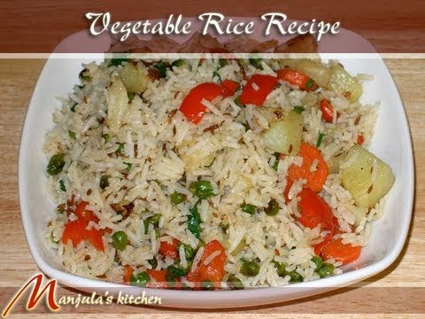

The first simple recipe - Rice and Vegetables
1. Add two bowls of rice to a pressure cooker.
2. Add the same amount of water. i.e. 3 bowls
3. Add chopped vegetables.
4. Add spices and 3 spoons of oil.
5. Close the lid and heat on medium. Close gas after 5 whistles.
6. Eat
7. Order from dominoes if something didn't go well
Stay tuned for more simple recipes and tips for off campus living. Been there, done that.
A youtube link
Youtube videoThe above video is the sole property of its owner